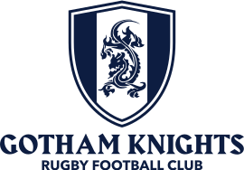

Knights
 Gotham Knights RFCIntroduction
Gotham Knights RFCIntroductionA fearless, welcoming home
for queer athletes.
Gotham Knights is New York City's LGBT rugby club. The brand is heraldic and athletic — a dragon crest, deep navy, bold gold — with a tone that is bold, warm, and a little cheeky. It speaks to two rooms at once: the queer NYC community and the players who live for matchday, and the grant officers and sponsors who fund the club. So the system ships in two registers.
NAVY FIELD,
GOLD SHOUTING
GothamHTF all-caps energy. Posters, socials, hype, recruitment — the swagger that fills a pitch.
Warm paper,
navy ink
Modern Hanken headings on cream. Decks, grant applications, sponsor one-pagers, the calmer pages.
Both share one palette and one type-family set — only the emphasis changes. The club is proudly LGBT, but the identity leads with navy + gold confidence. Pride shows up as a deliberate spectrum accent — a thin rule, a single highlighted moment — never a default gradient on everything.
Gotham Knights RFCContentsContents
How to use this book
Foundations first (voice, logo, color, type), then the tokens that make them buildable (spacing, motion), then the components that assemble into product. The final page is a manufacturer-ready Pantone sheet for apparel.
Gotham Knights RFC01 · Voice & ToneConfident without being
macho. Welcoming without
being soft.
The club has swagger and a door held open. We speak as "we" (the squad) and address you as "you." A wink is welcome — it never punches down, and inclusivity is structural, not decorative.
Loud register
COME PLAY.
TUESDAY NIGHTS, WALL STREET.
NO EXPERIENCE — BRING YOURSELF.
Professional register
"One of New York's longest-running inclusive rugby clubs. We field competitive sides while keeping our doors open to players of every background and skill level."
Do
- Say queer and LGBT plainly and proudly
- Use ALL CAPS athletic type for hype headlines
- Frame welcome explicitly — "all bodies, all levels"
- Set scores, fixtures & kit numbers in the mono face
- Keep hype lines short and punchy; stack them
Don't
- Lean on tired gay-bar clichés
- Punch down, ever — cheek is generous, not mean
- Use emoji in formal or professional contexts
- Go corporate-stiff in grant & sponsor copy
- Default to rainbow gradients to signal pride
Gotham Knights RFC02 · The MarksThe crest & lockups
The dragon shield is the brand's strongest icon — a badge, watermark, and bullet mark all at once. The horizontal and stacked lockups pair it with the Harbour wordmark. Never redraw the crest by hand; always place the supplied vector.

Gotham Knights RFC03 · Logo UsageClear space & don'ts
Clear space
Clear space (X) equals 30% of the crest's height — scale it up or down with the logo. Keep X clear on every side; nothing — type, photo edges, other logos — enters this zone.
Minimum size
Crest never below 24px / 0.25in. Horizontal lockup never below 120px / 1.25in wide, so "Rugby Football Club" stays legible.
Never do this
Gotham Knights RFC04 · ColorNavy anchors. Gold accents.
#0D1D41 · PANTONE 282 C
#FEC526 · PANTONE 123 C
Navy scale
Gold scale
Neutrals are intentionally warm — a cream #FBF7EE paper rather than cold white — which keeps the professional mode from feeling clinical. For gold text on light backgrounds, step down to gold-700 for contrast.
Gotham Knights RFC05 · ColorNeutrals, pride & status
Warm neutrals — paper & ink
Pride spectrum — accent only
Warm, slightly muted to sit beside navy + gold. Used as a thin rule or a single highlighted moment — a deliberate spectrum, including the Progress flag additions. Never a default gradient.
Status colors
Gotham Knights RFC06 · TypographyThe type system
Gotham Knights RFC07 · Type ScaleType scale
| display-2xl · athletic | HERO | 88px |
| display-lg | Matchday | 48px |
| display-md | Come play | 36px |
| h1 | Find your pack | 32px |
| h2 | Section heading | 24px |
| h3 | Subsection title | 20px |
| body-lg | All bodies, all levels — welcome here. | 18px |
| body | Tuesday nights on Wall Street. Bring yourself. | 16px |
| body-sm | Supporting copy and captions. | 14px |
| overline | Join us · eyebrow label | 11px |
Leading & tracking
Headlines run tight — --lh-tight 0.95 to --lh-heading 1.18 with negative tracking (-0.02em). Body breathes at --lh-body 1.55. Eyebrows are the only all-caps in the modern voice, at +0.16em. The Harbour wordmark tightens to -0.05em to match the official lockup.
Gotham Knights RFC08 · SpacingSpacing, radius & borders
Spacing scale
Corner radius — low & athletic
6–10px for most UI, 16px for large feature cards. Pills only for chips, tags & avatars. Nothing is bubbly.
Border widths — the confident 2px stroke
The brand likes a confident 2px stroke — gold or navy outlines on cards, buttons, and the crest itself. Hairlines for quiet dividers only.
Gotham Knights RFC09 · Elevation & MotionShadows, motion & focus
Elevation — cool, never gray
Cards lift with a soft --shadow-md; the gold glow is reserved for the primary CTA on dark. Cards use a flat fill + 2px border or a soft navy shadow — rarely both.
Motion — quick & decisive
Fades and short slides; no spring or bounce on UI. Press nudges 1px down — never a cute bounce. Respect prefers-reduced-motion.
Focus — always visible
A 3px gold ring at 2px offset, on every interactive element. Transparency & blur used lightly — a navy scrim over photos, a translucent sticky header. Not frosted-glass everywhere.
Gotham Knights RFC10 · ComponentsComponents
Come find your pack
All bodies, all levels — welcome here. No experience? Perfect.
Gotham Knights RFC11 · ComponentsComponents
Gotham Knights RFC12 · PatternsPatterns & textures
Seven reusable surfaces, shipped as .gk- utility classes that run from loud to a whisper — reach for the quietest one that does the job. Loud by nature: use sparingly — borders, bands, accents, single moments. Never wallpaper a whole layout.
Loud — borders, bands & matchday
Quiet — texture without the shout
The checkerboard is the loudest thing we own. Reserve it for borders and hard frames — never as a fill behind content. The halftones fade their dots, not the surface, so edges and borders stay solid. The pride rule is one deliberate spectrum line, never a default gradient.
Gotham Knights RFC13 · IconographyIconography
The brand has no proprietary icon font. Its signature "icons" are the crest, shield, and dragon — used as badges, watermarks, and bullet marks, not decorative line icons.
Brand marks as icons
Use the shield as a favicon, bullet, loading mark, or section divider. Fill style only for the crest — never reoutline it.
UI icons — Lucide
A documented substitution (no club icon set exists): Lucide, 2px stroke, 24px grid, round caps — matching the brand's confident --bw-base stroke.
Emoji and Unicode are not used as UI icons. The brand's energy comes from type and color, not emoji. Stroke weight stays at 2px to echo the brand stroke; the crest is the only fill mark.
Gotham Knights RFC14 · ApparelPantone apparel standards
For printed graphics, hangtags, and screen-print inks. Match to physical Pantone chips only — never to this on-screen render. For dyed fabric, request the equivalent Pantone TCX / TPG textile standard.
BUILT DIFFERENT.
A home you build with every poster, every kit, every welcome. Lead with navy and gold confidence, hold the door wide open, and keep the crest special. When in doubt, come back here.